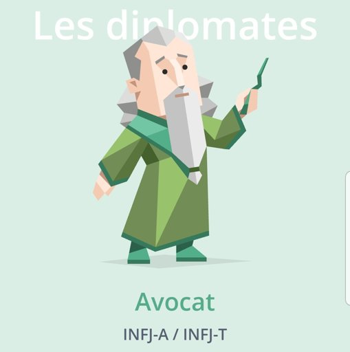

Je m’appelle Manon Glaude, j'ai 22 ans, et je suis étudiante française en troisième année de BUT Informatique à l’IUT de Villetaneuse (Ile-de-France, France). Ce site internet a pour objectif de me présenter, et de vous faire voyager dans mon univers !
Mes Valeurs
|
Qualité
Je préfère agir correctement, et après réflexion, pour obtenir un travail solide, plutôt que de me précipiter, et d’avoir des résultats aux bases fragiles. |
Professionnalisme
Le professionnalisme favorise la recherche de résultats intéressants, et permet de garder un certain cadre |
Organisation
L’organisation est la base de tout projet. Elle permet de prévoir un idéal dont on va tenter de s’approcher, et de distinguer ce qui est réaliste de ce qui ne l’est pas. |
|
Humilité
Être humble aide à se rendre compte de ses propres limites, et de s’améliorer perpétuellement en s’inspirant des autres. |
Respect
Sans respect des autres et de soi-même, rien de sain ou de constructif ne peut naître. Respecter, c’est témoigner que l’autre est un être humain avec des sentiments, et une personne de grande valeur. |
Justice
Agir avec justice revient à reconnaître et respecter les droits de tout un chacun. |
Ma personnalité
|
Écoute
J’aime écouter les autres. J’en apprends beaucoup ! |
Capacité à la remise en question
"Tout ce que je sais, c’est que je ne sais rien, tandis que les autres croient savoir ce qu’ils ne savent pas.", Socrate |

Avocate en 2023
2020: Aventurier, 2018:Médiateur |
J'aime
|
Mes qualités
| Appliquée | Autonome |
| Créative | Sérieuse |
Quelques Oeuvres et Personnes découvertes en 2024-2025
- Sacré Dieu d'Anne-Lise Combeaud et Frédéric Lenoir
- Demian de Hermann Hesse
- Les aventures de Charlemagne Legba de Kwamé Maherpa
Livres
- Les succès volés - Elizabeth Magie Phillips et le Monopoly (documentaire regardé sur Arte.tv )
- Meryl en mission pour imposer les Antilles dans le rap - documentaire complet (sur la chaîne Youtube @slash-music de France TV)
Documentaires
- The Substance réalisé par Coralie Fargeat
- Fanon réalisé par Jean-Claude Barny (que j'ai pu rencontrer lors d'une diffusion organisée par Cinewax et le CM98 )
- Zion réalisé par Nelson Foix
Films
- Adolescence créée par Jack Thorne et Stephen Graham
- Abbott Elementary créée par Quinta Brunson
- Ceux qui rougissent créée par Julien Gaspar-Oliveri (diffusée sur la chaîne Youtube de Arte.tv )
Séries
- Tann é konprann de Ti Malo
- Ca commence aujourd'hui (France 2, animé par Faustine Bollaert)
- Chez Sally (un podcast Spotify Studio, animé par Sally)
Podcasts
Citations et Proverbes
"Débouya pa péché"
Proverbe guadeloupéen,
365 Pwovèb , Didyer Mannette, page 25
Proverbe guadeloupéen,
365 Pwovèb , Didyer Mannette, page 25
"Sé zyé ki lach !"
Proverbe guadeloupéen,
365 Pwovèb , Didyer Mannette, page ??
Proverbe guadeloupéen,
365 Pwovèb , Didyer Mannette, page ??
"Que la force me soit donnée de supporter ce qui ne peut être changé
et le courage de changer ce qui peut l'être
mais aussi la sagesse de distinguer l'un de l'autre."
Marc-Aurèle, Philosophe
et le courage de changer ce qui peut l'être
mais aussi la sagesse de distinguer l'un de l'autre."
Marc-Aurèle, Philosophe
"Dieu veut que tu marches, et le Diable t'envoie un bolide"
Robyn McCall, The Equalizer, (Saison 2, Épisode 4)
Robyn McCall, The Equalizer, (Saison 2, Épisode 4)
"Des hommes aussi puissants soient-ils, pleurent aussi"
Entendu sur Radio Nova, le 27 décembre 2022 à 8h00
Entendu sur Radio Nova, le 27 décembre 2022 à 8h00
"On ne peut pas nager vers de nouveaux horizons,
tant qu'on n'a pas le courage de perdre la côte de vue"
The Rookie, (Saison 3, Épisode 14)
tant qu'on n'a pas le courage de perdre la côte de vue"
The Rookie, (Saison 3, Épisode 14)
Pour me contacter
Par mail
- Mail de l'université:manon.glaude[at]edu.univ-paris13.fr
- Mail professionnel: glaudemanon[at]gmail.com